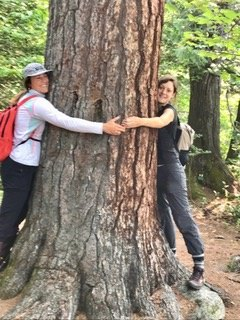
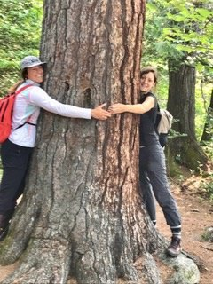
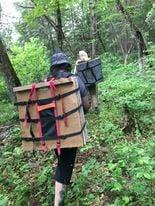
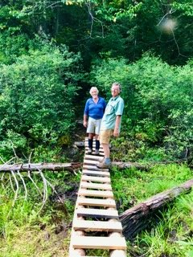
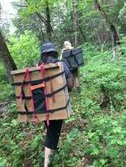
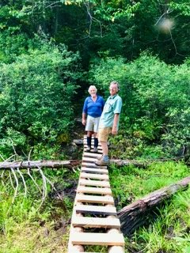

Friends of the Dumoine River
A collaborative effort to bring the Tote Road back to life


 

 



How it Began
Friends of Dumoine began as a loose organization of individuals that were bound by a feeling that they were mutual friends of a landscape, the Riviére du Moine watershed, they loved. They first wanted to do something about cleaning up the campsites along the Dumoine River. What began as a campfire chat has grown into a group of hundreds of virtual friends and several donors and an active group of hardcore volunteers.
Our efforts
The Friends of Dumoine, created in 2019, have marshalled volunteers and thousands of dollars of donations to make the Dumoine River valley safer and more hospitable to recreational users. They have cleaned campsites and portages along the river, built and installed wilderness toilets and, most ambitiously, this stalwart group of volunteers, under the leadership of author and wilderness advocate, Wally Schaber, have cleared and developed for recreational use an old Tote Road up the west side of the river.
In addition to drawing attention to the importance and value of wild spaces like the Dumoine River valley, the activities of the Friends of Dumoine have made it safe and possible for many people get outdoors in the Ottawa Valley and to accrue the many social and health benefits of this type of non-consumptive recreation.
- James Raffan
.png)